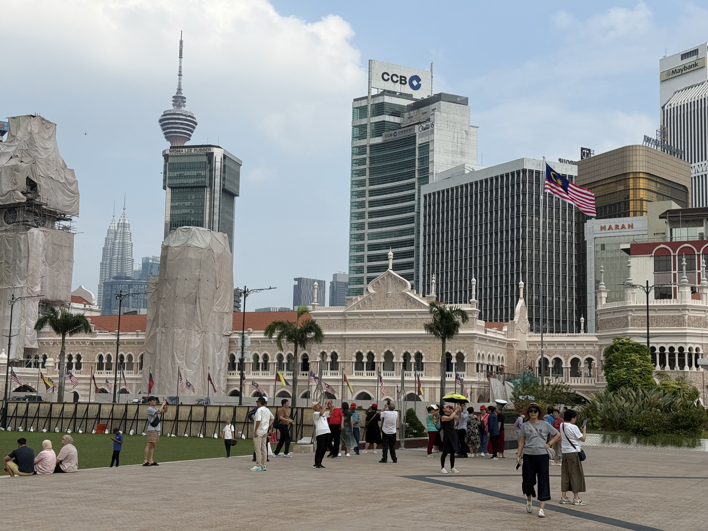

吉隆坡：跨越时空的多元共生
KUALA LUMPUR: THE MULTICULTURAL SYMBIONT ACROSS TIME
见证整座城市新旧交融的呼吸与脉动。
Witnessing the harmonized breath and pulse of the city's heritage and future.

- IPHONE 16 PRO
- 48mm
- 1/6536s
- f/1.78
- ISO 100
斑驳的红墙回响着旧日的余韵，摩天大楼的轮廓在云间自由生长。旗帜掠过长空，将沉淀的岁月与沸腾的当下，于这片静谧的广场中心定格。
"The lingering echoes of history resonate through the ancient walls, while the silhouettes of skyscrapers grow freely amidst the clouds. As the flag sweeps across the sky, the depth of the past and the vibrancy of the present are captured at the heart of this silent square."